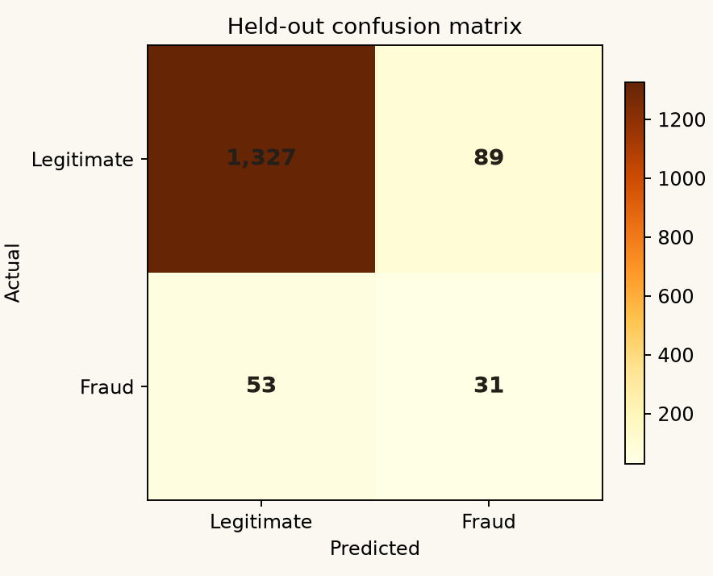

03 / EVALUATION
Measure the
misses, too.
Held-out results at a probability threshold selected using training-only validation.
CONFUSION MATRIXTEST SET · ACTUAL / PREDICTED

A false negative is a seeded fraud case missed by the model; false positives require investigator review.
ACCURACY—
PRECISION—
RECALL—
F1 SCORE—
ROC-AUC—
AVERAGE PRECISION—
READ WITH CARE
Good scores on invented patterns stay invented.
The target is generated from transaction attributes, so this test measures whether the classifier recovers those simulated patterns. A production evaluation needs independently verified labels and a time-based holdout from real, representative transactions.